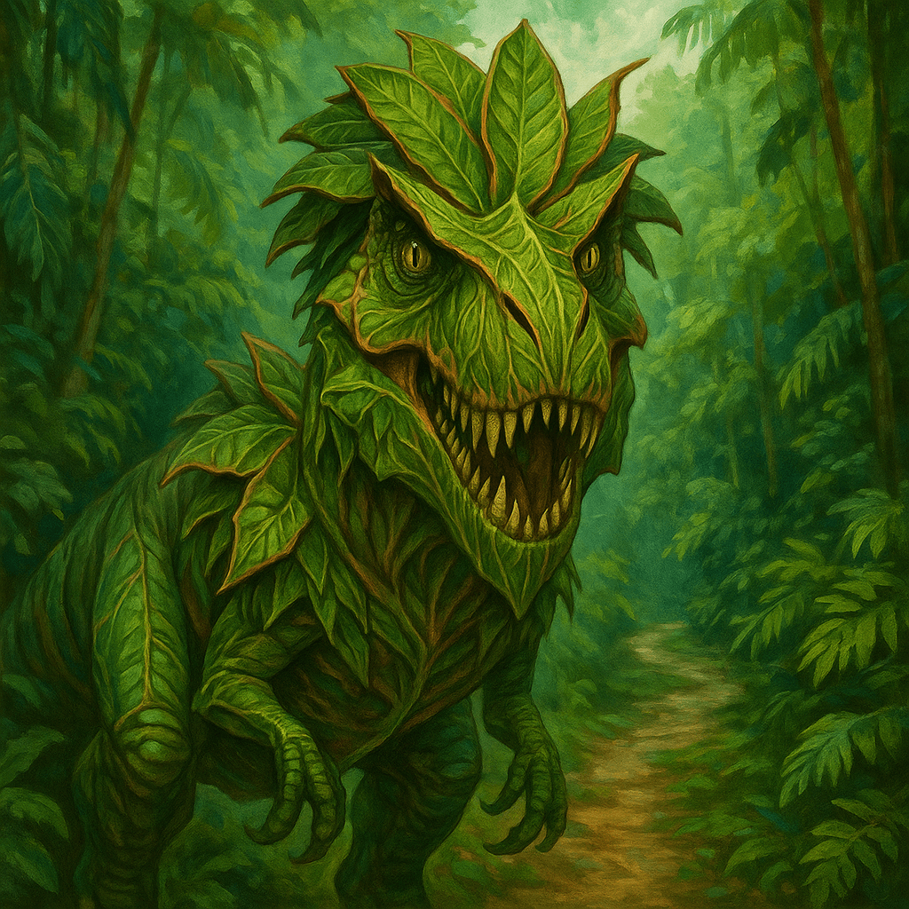

El sendero se ensancha ligeramente y se convierte en un claro cubierto de hojarasca. El silencio es total. Ni pájaros, ni insectos. Solo tu respiración agitada.
Entonces lo oyes. Un crujido seco, como ramas quebrándose. Otro más. Y luego, algo se mueve entre los árboles. Muy lentamente. Muy grande.
De entre la maleza surge una figura inmensa: parece un dinosaurio, pero no uno cualquiera. Su cuerpo está formado por hojas trenzadas, tallos, enredaderas. Cada paso que da es un susurro vegetal, como si la selva misma lo hubiera creado para proteger su corazón.
Tiene ojos... verdes, brillantes, como los de un reptil gigantesco. Te atraviesan con una mirada antigua, paciente, depredadora. Y cuando abre su boca, ves una hilera de dientes imposiblemente afilados: parecen solo tallos cortados… pero sabes que podrían desgarrarte en un instante.
No se mueve más. Respira, o eso parece. Las hojas de su pecho se expanden y contraen como si imitara a un ser vivo.
No tienes tiempo para pensar. El miedo te paraliza por un instante. Debes actuar ya.
